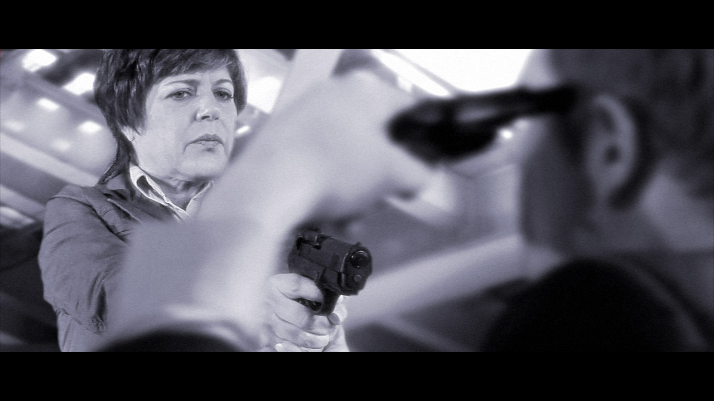

Sertafied Professional
Your friendly sertafied mattress professional In celebration of Labor Day, Carol labored all weekend promoting Serta mattresses at Sam's Club. Another sertafied customer Carol will be presenting a monologue for the…
Miss Ohio
Greetings fans, It has been a busy week for news! Carol's latest endeavor is that she has landed a part in an upcoming independent film titled Miss Ohio. It is written and directed by Gregory Fitzsimmons, and produced…
Dodgeville Revisited
Greetings Fans! Back in May, I mentioned Carol's work on a sitcom pilot for Dodgeville. Production is now complete on the pilot, and you can check out the trailer:…

Still Photos Photos
(left to right: Brett Lee, Elisé Lammers, Jason Ober, Carol Townsend, Danielle O'Farrell) Production photos from Still Photos have been posted on the Point of Contention web site. If you missed the show, you can catch a…
Carol Works The Beast!
(get your mind out of the gutter...) Hi fans! Tomorrow, Carol (and her Blazer) will be working on The Beast. The Beast is a new A&E drama starring Patrick Swayze which is scheduled to start airing in early 2009.…

I gotta go pinch out a grumpy
Greetings Fans! You may recall from last year, Carol worked on a scene in Witless Protection. We never got a chance to see it in the theater (and having seen parts of it now, I guess that might not be a bad thing).…
Three Plays, One Day
Greetings Fans! Tomorrow (July 25), Carol will be setting a new personal record for performances, with THREE separate plays. At 10:00am she will be performing in The Mystery of the Missing Moon (for grades K-2),…

Dirty Carol and Officer Hanley
A few more production proofs from Overproof have been posted to Flickr. Check out Carol's gritty portrayal! Put down the weapon! While we're on the subject of police, you can check out MY performance in The Dark Knight!…
Hear Carol on the POC Podcast
The third and final episode of the Point of Contention podcast covering Still Photos, has been posted to the POC web site here, or if you are an iTunes user, get it here. This episode includes both Charlies: our own…
See Still Photos and chat with Vanda after the show
A message from Carol: Thanks to all who have come to see the show! There are two weekends left to see Still Photos! And this Thursday, July 17th, the playwright will be there for a talk-back after the show! Regarding…